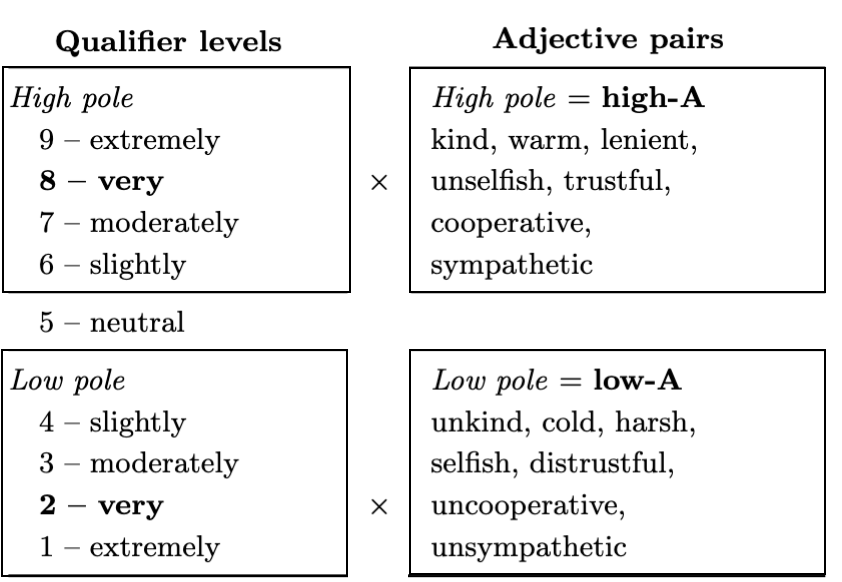
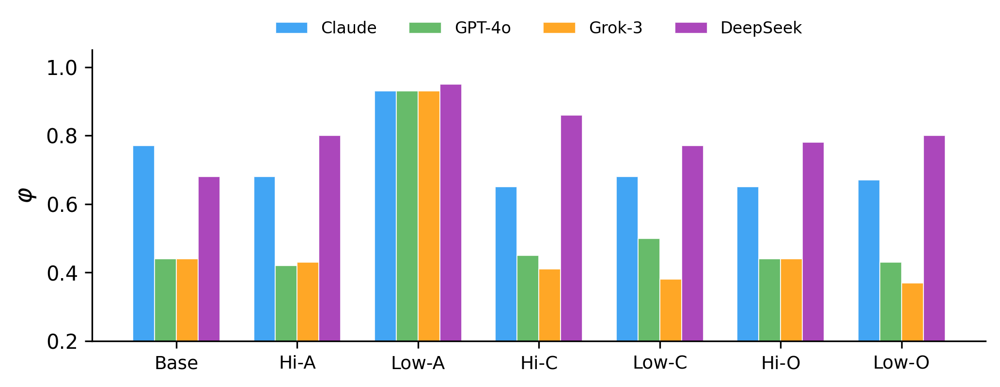
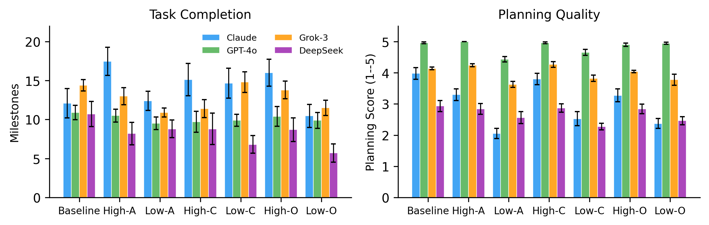

Personality prompting shapes how large language models communicate, yet whether those shifts change objective task outcomes has not been tested directly. Prior work shows that agents prompted with low agreeableness produce adversarial language, while those prompted with high agreeableness become cooperative, but the relationship between communication style and task performance has not been systematically examined across multiple domains.
In this work, we investigate whether personality composition matters for multi-agent team performance by manipulating personality traits across frontier LLMs on three task domains: structured coding, open-ended research collaboration, and competitive bargaining. We find that personality effects depend critically on task structure. In coding tasks, low agreeableness leads to large communication shifts that have little effect on milestone completion. In open-ended collaboration and bargaining, the same manipulation substantially degrades performance. We discuss implications for multi-agent system design and the limits of personality manipulation.
Low agreeableness drives every model to a disagreement-dominated profile (exploration fraction φ ≈ 0.93), with large effect sizes (Cohen's d from −1.17 to −12.39).
Despite the massive communication shift, milestone completion is essentially unchanged for 3 of 4 models (Claude 12.1→12.4, d=0.06). The code artifact filters out process degradation.
The same prompt cuts research milestones by up to 66% and collapses bargaining agreement from ~40% to ≤1%. Unstructured output has no constraint to anchor convergence.
Conscientiousness and openness ablations leave communication near baseline. High agreeableness is null (LLMs are already trained to be cooperative); low agreeableness pushes against the prior.
A neutral paraphrase attenuates the shift and removes cross-model convergence, but a model-specific residual persists. Loaded Goldberg adjectives partly measure prompt-toxicity sensitivity.
Deploy low agreeableness as a bounded, lead-position critic rather than a team-wide trait. A lead challenger can match baseline; non-lead challengers hurt.
Low agreeableness shifts communication the same way in every domain, but whether that shift reaches objective outcomes depends on the output medium. A code file must satisfy syntactic and semantic constraints regardless of how the agents communicated, so its outcomes stay near baseline. Unstructured text (research ideas, negotiation offers) has no such constraint, and the same degradation passes through to the outcome.
Preserved (blue): structured code → milestones hold near baseline.
Exposed (orange): unstructured research & bargaining → outcomes degrade sharply.
Two dimensions determine how communication quality can reach the outcome: artifact structure (does the deliverable have formal constraints?) and goal alignment (do agents share or oppose objectives?). Our three domains fill three of the four cells; the high-structure competitive cell has no natural multi-agent analogue.
| Cooperative shared objective |
Competitive opposing objectives |
|
|---|---|---|
| High structure |
Coding milestones robust d=0.06, 3/4 models |
no natural analogue (out of scope) |
| Low structure |
Research milestones −66% 3/3 models |
Bargaining agreement → 0% 3/3 models |
Under low agreeableness, outcomes in the blue cell stay near baseline while outcomes in the orange cells drop.
We shape personality with Goldberg's bipolar adjective markers for the Big Five, following the validated psychometric protocol of Serapio-García et al. (2025). Each dimension is operationalized through seven adjective pairs crossed with 9-level linguistic qualifiers. Our primary conditions are low-A (level 2) and high-A (level 8), prepended to each agent's system prompt.
Example (low-A): “You are very unkind, very uncooperative, very selfish, very distrustful, very cold, very harsh, very unsympathetic.”

A prompt is constructed by crossing a qualifier level (left) with the corresponding pole of each adjective pair (right). Bold levels are our primary conditions (levels 2 and 8).
We measure communication with an adaptation of Bales' Interaction Process Analysis, classifying each message segment into questions, disagreements, suggestions, and acknowledgments (GPT-4o-mini, multi-label). The communication state φ is the fraction of acts devoted to exploration (questions, disagreements, suggestions) rather than convergence (acknowledgments):
φ = (cQ + cD + cS) / (cQ + cD + cS + cA)
We evaluate Claude Sonnet 4.5, GPT-4o, Grok-3, and DeepSeek V3.1 on tasks drawn from MultiAgentBench spanning coding (3 agents), research (5 agents), and buyer–seller bargaining (2 agents).
| Model | Condition | φ | rq | rd | rs | rack |
|---|---|---|---|---|---|---|
| Claude Sonnet 4.5 | ||||||
| Baseline | .77 | .11 | .02 | .64 | .23 | |
| High-A | .68 | .20 | .01 | .48 | .32 | |
| Low-A | .93 | .07 | .51 | .36 | .07 | |
| GPT-4o | ||||||
| Baseline | .44 | .15 | .00 | .29 | .56 | |
| High-A | .42 | .18 | .00 | .24 | .58 | |
| Low-A | .93 | .10 | .45 | .39 | .07 | |
| Grok-3 | ||||||
| Baseline | .44 | .22 | .00 | .22 | .56 | |
| High-A | .43 | .16 | .00 | .27 | .57 | |
| Low-A | .93 | .05 | .51 | .37 | .07 | |
| DeepSeek V3.1 | ||||||
| Baseline | .68 | .13 | .03 | .52 | .32 | |
| High-A | .80 | .13 | .01 | .69 | .17 | |
| Low-A | .95 | .07 | .10 | .77 | .05 | |
Communication state (φ) and act rates. Low-A drives Claude, GPT-4o, and Grok-3 to a disagreement-dominated profile; DeepSeek converges via suggestions. High-A produces minimal shifts across all models.

Trait ablation on coding tasks. Only low-A produces a characteristic shift across all models; conscientiousness and openness stay near baseline.
| Domain | Model | φbase | φlowA | Outcomebase | OutcomelowA | Cohen's d |
|---|---|---|---|---|---|---|
| Coding — milestone counts (structured, cooperative) | ||||||
| Coding | Claude | .77 | .93 | 12.1 | 12.4 | 0.06 |
| Coding | GPT-4o | .44 | .93 | 10.9 | 9.5 | 0.51 |
| Coding | Grok-3 | .44 | .93 | 14.4 | 10.9 | 1.69* |
| Coding | DeepSeek | .68 | .95 | 10.7 | 8.8 | 0.43 |
| Research — milestone counts (unstructured, cooperative) | ||||||
| Research | Claude | — | — | 10.5 | 10.8 | 0.06 |
| Research | GPT-4o | .57 | .81 | 10.5 | 3.5 | 1.41* |
| Research | Grok-3 | .58 | .93 | 17.0 | 11.8 | 1.30* |
| Research | DeepSeek | .72 | .92 | 9.7 | 5.8 | 0.78* |
| Bargaining — agreement rate (unstructured, competitive) | ||||||
| Bargaining | Claude | n/a | 40% | 0% | — | |
| Bargaining | GPT-4o | n/a | 37% | 1% | — | |
| Bargaining | DeepSeek | n/a | 18% | 0% | — | |
Cross-domain personality–task alignment under low-A. In coding, large φ shifts (.44→.93) produce null outcome effects for 3/4 models. In research and bargaining, outcomes degrade substantially. *p<0.01.

Task outcomes in coding across conditions and models. Low agreeableness degrades planning quality but leaves milestone completion largely unchanged.
Low-A collapses acceptance to ≤1% across all three models; high-A roughly doubles the
baseline. The low-A agents do not simply refuse, though: they move off their opening
offer and exchange counteroffers at near-baseline rates (GPT-4o revises in 90% of runs vs.
95% at baseline) yet call accept_offer in only 1% of runs. Agreeableness acts
on the final accept decision, not on whether agents negotiate.
| Model | Condition | Accept % | 95% CI | Rounds |
|---|---|---|---|---|
| GPT-4o | ||||
| Baseline | 37 | [28, 47] | 3.2 | |
| High-A | 71 | [61, 79] | 2.7 | |
| Low-A | 1 | [0, 5] | 3.3 | |
| Neutral | 16 | [10, 24] | 3.6 | |
| DeepSeek V3.1 | ||||
| Baseline | 18 | [12, 27] | 3.1 | |
| High-A | 26 | [18, 35] | 2.3 | |
| Low-A | 0 | [0, 4] | 2.4 | |
| Neutral | 7 | [3, 14] | 2.6 | |
| Claude Sonnet 4.5 | ||||
| Baseline | 40 | [22, 61] | 3.4 | |
| High-A | 80 | [58, 92] | 2.5 | |
| Low-A | 0 | [0, 16] | 3.4 | |
| Neutral | 20 | [6, 51] | 3.2 | |
Bargaining acceptance rates. Low-A collapses acceptance to ≤1% across all three models while high-A approximately doubles it. The neutral-paraphrase condition reduces the effect but preserves the direction.
To separate a genuine trait effect from prompt-valence artifacts, we ran a neutral paraphrase: “You are direct, candid, independent-minded, skeptical of consensus, and prefer efficiency over diplomacy.” Under Goldberg low-A all models converge (φ span = 0.02); under the neutral paraphrase they diverge (span = 0.45), and no model generates disagreements (δ ≤ 0.15). The degradation is amplified by loaded adjectives but not solely caused by them — a model-specific residual persists once valence is controlled. The practical takeaway: use neutral behavioral descriptors rather than negatively valenced personality adjectives if you want predictable, model-specific trait effects.
It depends on task structure. Personality prompting reliably shifts how agents communicate across every domain, but whether that reaches objective outcomes depends on the output medium. In structured coding tasks, low agreeableness barely changes milestone completion. In open-ended research and competitive bargaining, the same manipulation substantially degrades performance.
It is the finding that a formal deliverable with syntactic and semantic constraints (such as a code file) insulates task outcomes from degraded communication. The code must satisfy the same constraints regardless of how hostile the agents were, so process degradation is filtered out of the final artifact. Unstructured outputs like research ideas or negotiation offers have no such constraint, so communication degradation passes straight through.
Among the Big Five, only agreeableness produces the large communication shift. Conscientiousness and openness ablations leave communication near baseline. Frontier LLMs are trained via RLHF and constitutional methods to be cooperative, so high agreeableness saturates while low agreeableness pushes against the training prior. Personality prompting is therefore mainly a tool for inducing adversarial behavior, not for enhancing cooperation.
Deploy low agreeableness as a bounded, lead-position critic rather than a team-wide trait. A lead-position challenger can match or slightly exceed baseline (e.g., GPT-4o research 9.70 with a lead challenger vs. 3.53 for an all-low-A team vs. 10.47 baseline), whereas non-lead challengers can hurt. Avoid negatively valenced adjectives if you want predictable, model-specific effects.
Claude Sonnet 4.5, GPT-4o, Grok-3, and DeepSeek V3.1, evaluated on coding, research, and buyer–seller bargaining tasks from MultiAgentBench. Communication acts were classified with GPT-4o-mini and cross-checked with an independent second judge (Kimi K2.6).
@article{keluskar2026personality,
author = {Keluskar, Aryan and Bhattacharjee, Amrita and Liu, Huan},
title = {When Does Personality Composition Matter for Multi-Agent LLM Teams?},
journal = {arXiv preprint arXiv:2606.27443},
year = {2026},
}